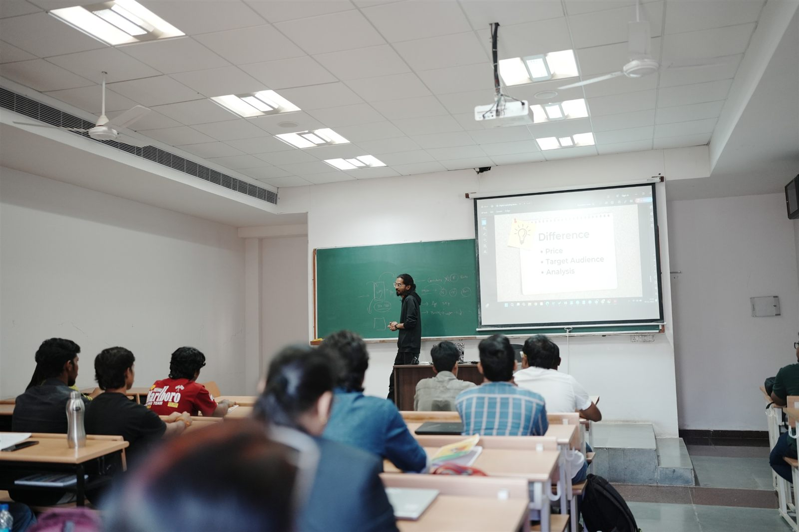
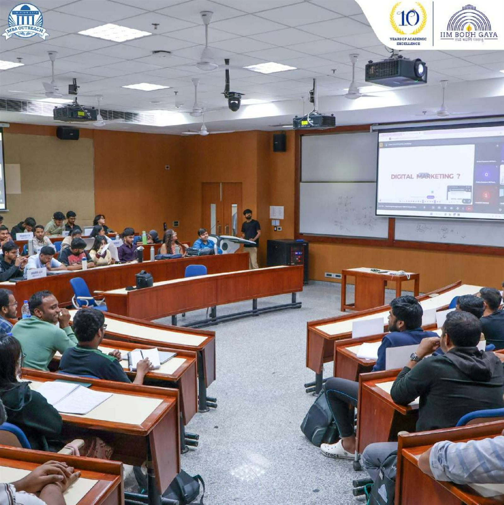
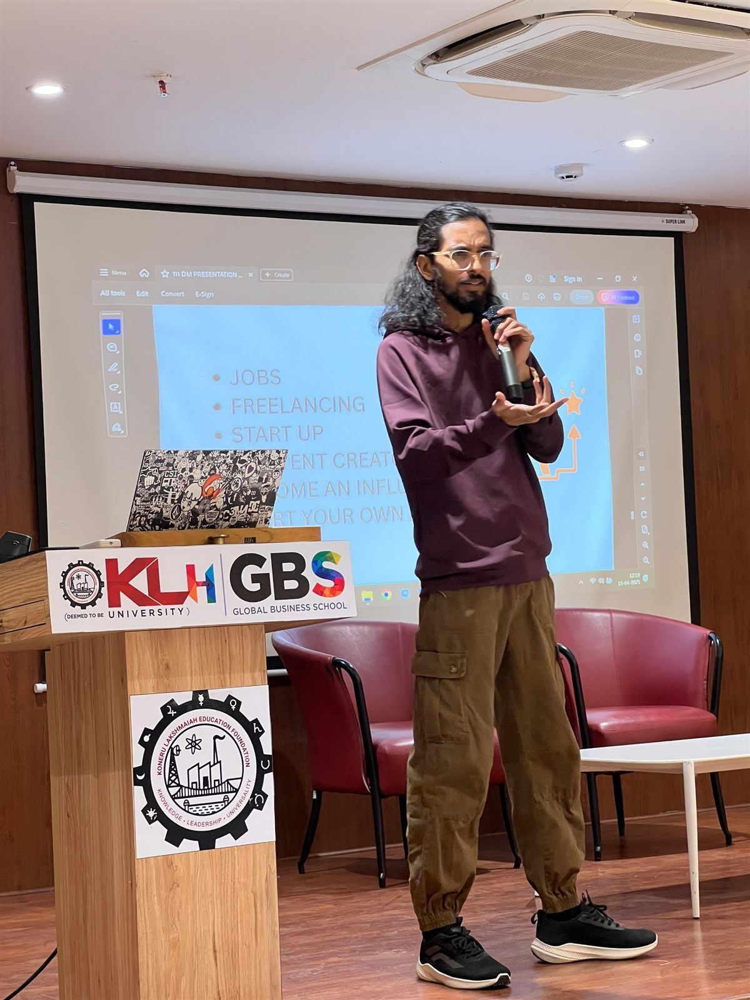
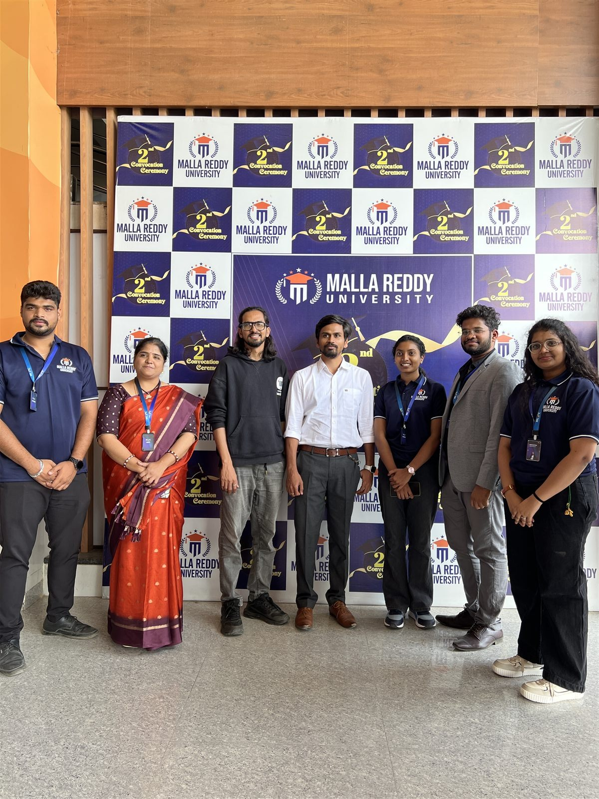
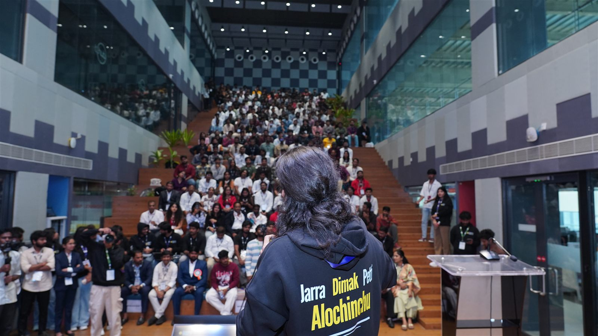
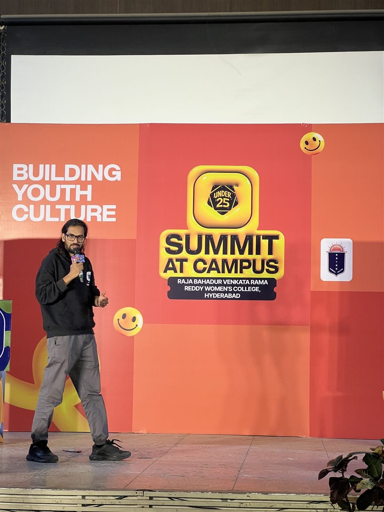
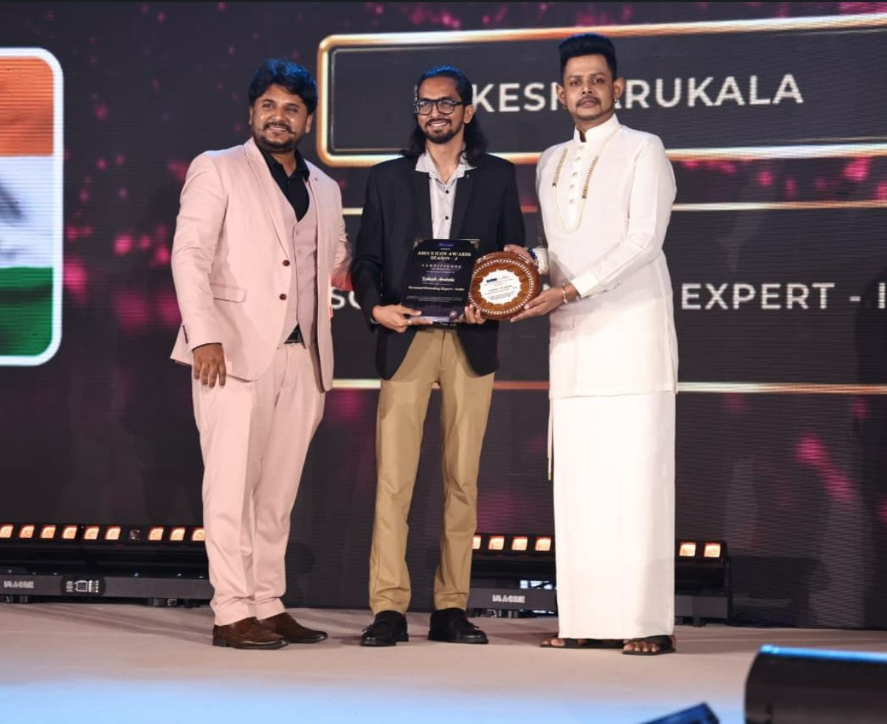

From dropout to gold medalist to digital leader.
Lokesh Arukala is a creator mentor, founder of Grox Digital, host of Telugu Talks with LK, and an invited speaker who helps people turn skills and content into opportunity.

The journeyConfusion → clarity
He did not begin with followers. He began with curiosity.
“Success is not where you reach, but how many you uplift along the way.”
A middle-class dream
Born June 10, 1991 in Hyderabad. His father was a car painter and his mother a homemaker. After struggling with maths and losing confidence, Lokesh left intermediate after 10th grade—a decision that became the start of a very different education.
₹2,000 a month
Working at a small internet café introduced him to the power of the web. He taught himself digital marketing through tutorials, blogs, experimentation, repeated failures, and relentless curiosity.
Dropout becomes gold medalist
Lokesh returned to commerce, became a college topper, completed B.Com (Computers), earned an M.Com Gold Medal from Osmania University, and later completed an MBA. The comeback shaped his belief that clarity and persistence can rebuild confidence.
The setback that built everything
A business failure cost him ₹6–7 lakh. Instead of quitting, he studied every mistake, rebuilt, generated ₹10 lakh, and cleared the debt. That experience now informs how he teaches risk, resilience, and execution.
Grox Digital is born
He founded Grox Digital on the belief that marketing should empower rather than manipulate. The Hyderabad agency grew across SEO, social media, advertising, content, and founder branding while Lokesh built a major Telugu audience.
Recognised. Still building.
Lokesh has spoken at IIT Hyderabad, BITS Pilani, IIM Bodh Gaya, and 30+ events; trained 10,000+ students; built the Creators Growth Community; and received the Personal Branding Expert – India title at Asia's Icon Awards 2026 in Colombo.
Speaking & workshops30+ rooms entered
IIT. BITS. IIM. And the communities beyond them.
Sessions span personal branding, digital marketing, creator economy, Meta advertising, career growth, resilience, entrepreneurship, and sustainable income.







Awards & recognitionMilestones, not destination
Recognised. Not done.
Eight recognitions across national and international stages mark a body of work built through teaching, speaking, business, and community impact.

January 29, 2026 · Colombo
Personal Branding Expert – India
Asia's Icon Awards reviewed work records, client outcomes, and long-term impact before presenting the recognition in Sri Lanka.

Education · Business · Speaking
Eight platforms of recognition
Recognition includes Best Digital Marketing Trainer, Business Excellence, Best Motivational Speaker, Pride of Telangana, and community honours.